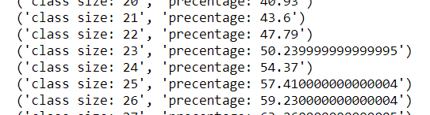

אשמח להברה לגבי תאריכי הלידה של התלמידים הכיתות. על פי ההיגיון כולם אמורים להיות בני אותו גיל, אך מניסוח התרגיל משתמע כי יכולים להיות באותה “כיתה” תלמידים שאינם בני אותו גיל.
האם יש להגריל תלמידים בגילאים שונים? אם כן, באיזה טווח שנים?
זו כתה של רענון נהיגה.
בחר טווח שנשמע לך הגיוני
6 לייקים
אותו תרגיל רק ניואנס אחר,
לא ממש רשום אם להחזיר משהו, להדפיס משהו… וכו וכו כמו הרבה פעמים נתון לשיקולנו (שלדעתי סתם מקשה על הבדיקה כי כל אחד עושה משהו אחר, אבל זה אולי החלטה מכוונת)
אני עשיתי פונקציה לסעיף הראשון שמחזירה בסוף ממש אחוז (יוצא סביבות ה49.5 - 50.5 כמצופה לדוגמא)
ובסעיף השני, גנרטור שמחזיר ערכים ואז משתמש בזה להדפסה בצורה הזאת:

האם זה בסדר?
אם התכנית שלך מחזיר את אחוז סה"כ הכתות שמקיימות את הפרדוקס אז זה בסדר אם הוספת כאקסטרה את עניין ההצגה של כל כתה (למרות שלא חייבים ע"פ דרישות התרגיל) זה בסדר.
אולם, אם אתה רק מציג ממוצע של כל כתה ולא מציג את הממוצע הכולל של כל הכתות, אז אתה לא עומד בדרישות התרגיל.
עריכה: מה הכוונה
אני בפונקציה שלי בודק כמה מתוך ה-10000 מקיימות לפחות שני תלמידים עם אותו תאריך ואז מחזיר את אחוז הכיתות שאכן קיימו את זה (המספר שקיבלתי חלקי 10000, וכדי להתקטנן הכפלתי ב100 כדי לייצג אחוז)
לפי הניסוח זה לא נראה ככה
בסעיף הראשון רשום “מהו אחוז הכיתות שבהן ציינו לפחות 2 ימי הולדת באותו תאריך?” ואני ממש החזרתי ממוצע (מדובר על ה10000 כיתות בגודל 23)
בסעיף השני רשום “השתמשו בתוכנה שכתבתם כדי לחשב את הסיכויים עבור כיתות שבהן תלמיד אחד, ועד כיתות…”
כלומר, לא רשום לתת מספר כולל של כל האפשרויות
עשית נכון
בנוגע למה שרשמת על הסעיף השני, אני הבנתי את זה כך שאתה צריך לדאוג שהקוד שלך יהיה גנרי כך
שהוא יוכל לבדוק לא רק עבור כתות של 23 אנשים אלא עבור כל גודל כתה.
השאלה אם טווח של 4 שנים הוא הגיוני כי הוא נותן התפלגות של שנה אחת מעוברת על שלוש שנים רגילות
נו, ע"י החלק הראשון (שצריך להיות גנרי, או מועתק בצורה שמאפשרת גנריות שזה מיותר כי למדנו פתרון פשוט לגנריות עם דיפולט), צריך להציג פתרון עבור כל אפשרות גודל בין 1 ל366
משמע (ואני בטוח שעד עכשיו זה כבר לא נחשב ספוילר כי זה ממש כמו שאר התרגילים שהיו, ובכל זאת
ספוילר
ליצור בסעיף השני גנרטור שמשתמש בצורה “גנרית” בפתרון של הסעיף הראשון, פשוט כל פעם לגודל אחר
אני לא בטוח מה ההבדל ממה שאני אומר, אלא אם הכוונה שלך שידנית הבודק יוכל לבדוק לאיזה גודל שהוא רוצה (ולא שזה קורה בבת אחת)
האם באמת כל 4 שנים צמודות מוכרח שיהיה שם שנה מעוברת?
מה היחס של שנים מעוברות מול שנים לא מעוברות? (בלוח שנה העברי לדוגמא זה 7 לכל 19 שנים)
ספוילר
זה לא עקבי בהכרח אם תסתכל על השנים 1996-2000 לעומת 1896-1900
ובאופן כללי לפי התשובה של ים, אני לפחות הבנתי שזה נתון לשיקולנו עד כדי הגיון כלשהו…
האם רק 4 שנות גיל עלולים להיות בשיעור רענון נהיגה? או שאולי אפליו 10 שנים הפרש?
מצד שני, אולי נלך רחוק יותר, אבל האם באמת נצפה שאדם בן 90 יהיה שם?
קח מספר שנים מייצג הגיוני, וזרום עם זה לדעתי
זה עניין של עד כמה אתה רוצה להיות מדוייק.
שנה מעוברת יש לה מספר תנאים והיא אינה מתרחשת בהכרח כל 4 שנים.
למשל שנת 1900 מתחלקת ב4 אבל בגלל שהיא מתחלקת ב100 היא לא נחשבת שנה מעוברת.
זה אומר, שעל טווח שנים גדול יותר, אתה תקבל סטטיסטיקה מדוייקת יותר כי יכללו שם יותר ויותר מצבים.
הפרדוקס הוא עובד גם עבור שנה אחת, וגם עבור 4, וגם עבור 1000.
אני מציע לשים שם פרמטר ואז עבור כל טווח שנים שלא תבחר הקוד שלך ידע להתמודד איתו כלומר הוא יהיה נכון עבור כל n שנים
לייק 1